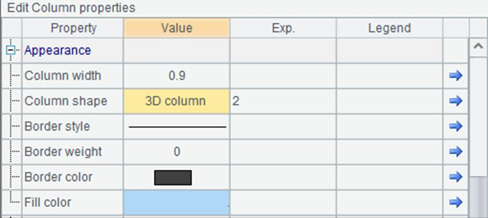
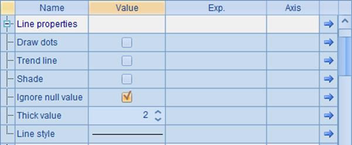
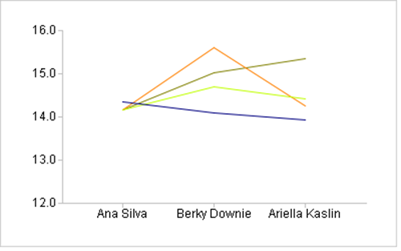
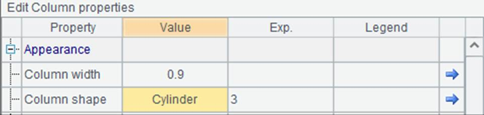
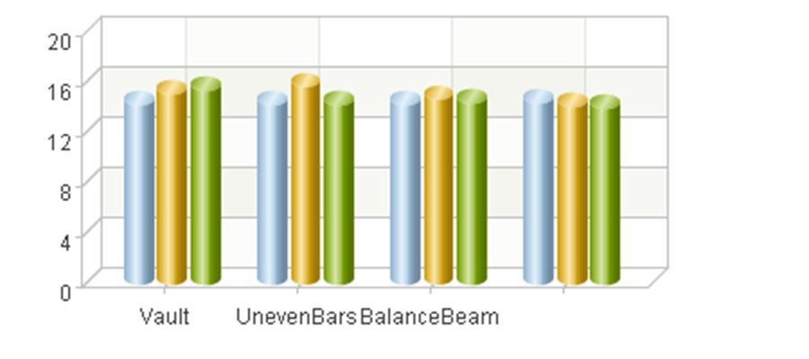

The width of columns in a column chart has a default value. No columns will be plotted wider than this value, which is determined by the number of columns and the Gap ratio property of the enumeration axis. The gap ratio is the ratio of space width between columns in different categories to the default column width. The default ratio is 1.5, which means the former is 1.5 times wider than the latter.

Note: This property of enumeration axis will affect the plotting result of the column element that uses this axis. By editing the chart parameters to modify the property in A4, you can adjust the width of columns. For example, modifying this enumeration axis property in the clustered column chart as follows:

Set Gap ratio as 1 to make the space smaller and equal to the column width. The plotting result would be this after the modification:

The space between different groups of columns has become smaller, making the column width comparatively bigger. Actually the default column width is collectively decided by the gap ratio on the enumeration axis as well as the number of columns and their categories.
Besides the default width, the width of the column is affected by appearance properties of the column element as well, such as Column width. The value of Column width is the proportion of column width to the default width. When the value is 1, column width is equal to the default width. The default value is 0.9, meaning the ratio between the column width and the default width is 0.9. Seen from the above plotting result, columns within the same group in this case still have space between each other. If the chart properties are modified as follows:

Since the Column width value becomes smaller, the width of each column becomes smaller, with following plotting result produced:
